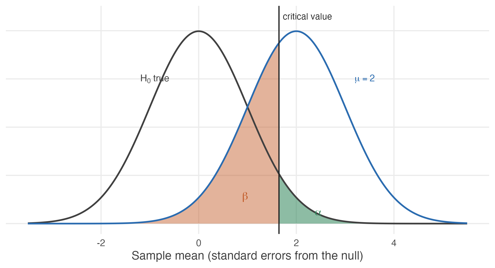

4.9 Two ways to be wrong
We have spent this unit controlling one kind of mistake. What about the other?
Every test so far has been built around \(\alpha\), the risk of rejecting a claim that happens to be true. We chose it in advance, usually 0.05, and everything followed.
But rejecting a true claim is only one way to get the answer wrong. We could also fail to reject a false one — conclude that a drug does nothing when it works, that a programme has no effect when it does.
That second error has had no name and no symbol so far. It gets both now, and it turns out to matter at least as much as the first.
The two errors
A Type I error is rejecting \(H_0\) when \(H_0\) is true. A false alarm.
\[\alpha = P(\text{reject } H_0 \mid H_0 \text{ true})\]
A Type II error is failing to reject \(H_0\) when \(H_A\) is true. A missed detection.
\[\beta = P(\text{fail to reject } H_0 \mid H_A \text{ true})\]
Think of a smoke alarm.
Sometimes there is no fire, and the alarm goes off anyway — a false alarm, and a Type I error. Setting \(\alpha = 0.05\) says we will tolerate this about five times in a hundred when nothing is wrong.
Sometimes there is a fire and the alarm stays silent. That is a Type II error, and it is the one that burns the house down.
| Fail to reject \(H_0\) | Reject \(H_0\) | |
|---|---|---|
| \(H_0\) is true | Correct | Type I error (\(\alpha\)) |
| \(H_A\) is true | Type II error (\(\beta\)) | Correct |
Two cells are mistakes, and they are not the same mistake. A test cannot make both at once — which of them is even possible depends on a fact about the world that we do not know.
The umpire’s call
Cricket’s Decision Review System is a hypothesis test, and a well-designed one.
\[H_0 : \text{the on-field umpire was right} \qquad H_A : \text{the on-field umpire was wrong}\]
A Type I error overturns a correct decision. A Type II error lets a wrong decision stand.
The system’s “umpire’s call” rule — where marginal ball-tracking evidence leaves the original decision standing — is exactly a choice to keep \(\alpha\) small.
Overturning requires clear evidence, not a coin-flip’s worth. The designers decided that wrongly overturning a correct umpire is a worse error than occasionally failing to correct a wrong one, and they built that judgement into the threshold.
Every choice of \(\alpha\) is a judgement of the same kind, whether or not it is made deliberately.
Why errors happen at all
Both errors have the same root cause: the sampling distribution under \(H_0\) and the sampling distribution under \(H_A\) overlap.
If a sample mean lands in the region where the two overlap, it is consistent with either explanation, and no procedure can tell them apart with certainty.

Figure 4.5: Two sampling distributions: the left curve holds if the null is true, the right one if the true mean is 2. The vertical line is the critical value, 1.645. Alpha is the sliver of the null distribution beyond it – rejecting when the null is true. Beta is the much larger part of the alternative distribution below it – failing to reject when the alternative is true. Power is what remains.
Notice the shape of the trade-off. Moving the critical value to the right shrinks the green area and enlarges the red one: fewer false alarms, more missed detections. Moving it left does the reverse.
\(\alpha\) and \(\beta\) cannot both be made small by choosing a threshold.
The threshold only slides the boundary between them. Reducing \(\alpha\) from 0.05 to 0.01 buys fewer false alarms at the direct cost of more missed real effects.
The only way to reduce both at once is to separate the two distributions — which means a larger sample, a bigger effect, or less noise. That is a matter of study design, not of choosing a number.
Power
The power of a test is the probability of detecting an effect that is really there:
\[\text{Power} = 1 - \beta = P(\text{reject } H_0 \mid H_A \text{ true})\]
\(\alpha\) is chosen. Power is a consequence — of the sample size, the size of the effect, and the noise in the data.
Unlike \(\alpha\), power cannot be stated without saying how large the effect is. A test that easily detects a large effect may be hopeless against a small one, so “the power of this test” is always shorthand for “the power against an effect of this particular size.”
Working it out
A new drug is believed to lower blood pressure. We test
\[H_0 : \mu \leq 0 \qquad H_A : \mu > 0\]
where \(\mu\) is the average reduction. Suppose \(\sigma = 4\), the trial has \(n = 16\) patients, and we work at \(\alpha = 0.05\).
Step 1 — the rejection rule. One-sided at 5%, so the critical value is \(z_{0.05} = 1.645\), and we reject when \(Z > 1.645\).
Step 2 — suppose the drug works. Say the true average reduction is \(\mu_1 = 2\) points. The standard error is
\[\mathrm{se} = \frac{\sigma}{\sqrt{n}} = \frac{4}{\sqrt{16}} = 1\]
Step 3 — where the statistic now sits. Under \(H_0\) the statistic \(Z = \bar{X}/\mathrm{se}\) is centred on zero. If the truth is \(\mu_1 = 2\), it is centred instead on
\[\delta = \frac{\mu_1 - \mu_0}{\mathrm{se}} = \frac{2 - 0}{1} = 2\]
Step 4 — the probability of missing it. We fail to reject when \(Z \leq 1.645\). Under the alternative, \(Z\) is centred on 2, so
\[\beta = P(Z \leq 1.645 \mid \mu = 2) = P(Z - 2 \leq -0.355) = \Phi(-0.355)\]
se <- 4 / sqrt(16)
delta <- (2 - 0) / se
crit <- qnorm(0.95)
c(critical_value = crit,
shift = delta,
beta = pnorm(crit - delta),
power = 1 - pnorm(crit - delta))#> critical_value shift beta power
#> 1.6449 2.0000 0.3612 0.6388So \(\beta = 0.36\) and the power is 0.64.
Read that carefully. The drug genuinely works — it lowers blood pressure by two points on average — and this trial has a better than one-in-three chance of failing to notice.
A trial like this is underpowered. If it returns “no significant effect”, that tells us very little: we already knew the study would miss a real two-point effect about 36% of the time.
This is the sharpest version of a point made in Section 4.3. Failing to reject \(H_0\) is not evidence that \(H_0\) is true, and when power is low it is barely evidence of anything at all.
What determines power
Four things, and it is worth seeing which of them are under our control.
power_at <- function(n, effect = 2, sigma = 4, alpha = 0.05) {
se <- sigma / sqrt(n)
round(1 - pnorm(qnorm(1 - alpha) - effect / se), 3)
}
data.frame(n = c(16, 25, 50, 100, 200),
power_vs_2 = sapply(c(16, 25, 50, 100, 200), power_at),
power_vs_1 = sapply(c(16, 25, 50, 100, 200), power_at, effect = 1))#> n power_vs_2 power_vs_1
#> 1 16 0.639 0.260
#> 2 25 0.804 0.346
#> 3 50 0.971 0.549
#> 4 100 1.000 0.804
#> 5 200 1.000 0.971Power rises when
- the effect is larger — big effects are easy to find;
- the sample is larger — the two distributions pull apart;
- the noise is smaller — the distributions are narrower;
- \(\alpha\) is larger — a lower bar to clear, at the cost of more false alarms.
The first is a fact about the world. The last is a choice with a price. Only the middle two are improvements in the ordinary sense.
The table shows the practical consequence. Against a two-point effect this trial needs about fifty patients for respectable power. Against a one-point effect, even two hundred patients leave it detecting the effect barely two-thirds of the time.
This is why power should be computed before a study, not after.
Deciding how many patients to recruit means asking: what is the smallest effect worth detecting, and how many observations does it take to have a fair chance of detecting it? A study that cannot answer its question is not worth running, and that can be known in advance.
Computing power after a null result is a different and largely futile exercise. The honest statement is the one the design already implied.